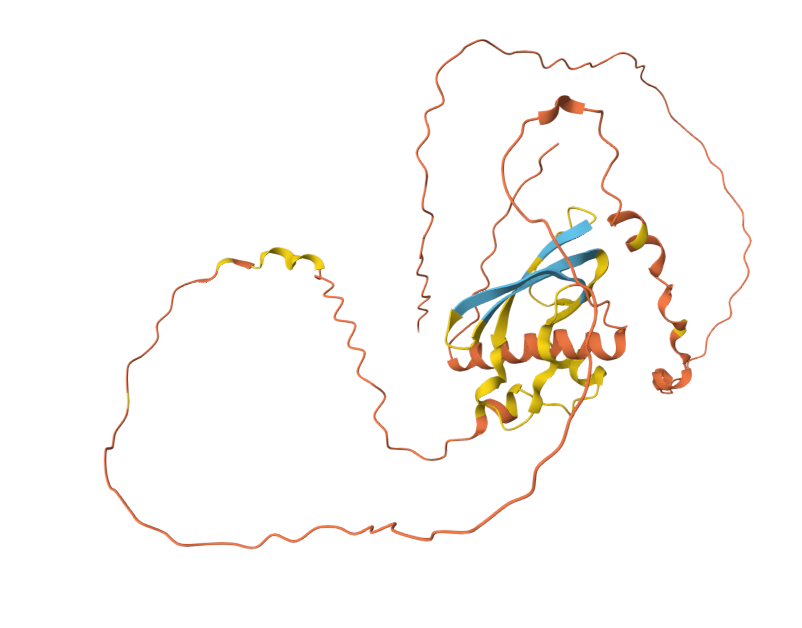

Executive Summary
"Does AI help science or hurt it?" An old argument, finally given an empirical answer at scale. In January 2026, Nature published the first study to weigh 41.3 million papers on this question. James Evans (University of Chicago Knowledge Lab) and Yong Li (Tsinghua), with co-authors Qianyue Hao and Fengli Xu, published "Artificial intelligence tools expand scientists' impact but contract science's focus" (DOI: 10.1038/s41586-025-09922-y, Vol. 649, pp. 1237–1243). Using a BERT-based classifier (F1 = 0.875, five-expert Fleiss' Kappa 0.964) across 23 years of papers in six natural-science fields — biology, medicine, chemistry, physics, materials science, geology — the team nailed down a finding that had long lived only in anecdotes: AI adoption pushes individual utility and collective breadth in opposite directions. This is not a one-off study. It is the apex of the "narrowing of science" thesis that Evans Lab has been tracking since its 2015 paper in American Sociological Review, and one movement in a seven-year meta-science chord that also includes Park · Funk 2023 Nature, Messeri · Crockett 2024 Nature, and Kleinberg · Raghavan 2021 PNAS.
The individual victory: scientists who use AI publish 3.02x more papers, receive 4.84x more citations, and rise to project leader 1.37 years earlier than their peers. The collective loss, in the same 23 years: the collective volume of topics studied shrinks by 4.63%, and follow-on engagement among scientists drops by 22%. The citation-concentration Gini coefficient is 0.754 — an AI-era variant of the Matthew effect, where the top 22.20% of papers absorb 80% of citations. In Evans's own words — "AI tools are expanding individual capabilities while contracting scientific attention," and "AI concentrates attention on data-rich domains while leaving a growing number of potentially fruitful areas unexplored." The fact that mathematics, theoretical physics, and philosophy were absent from the six analyzed fields from the start is itself meta-evidence: data-poor domains drop out of analysis before they drop out of attention.
The paradox is now a policy agenda. On March 25, 2026, Nature ran an editorial titled "AI scientists are changing research — institutions, funders and publishers must respond." Korea, in turn, launched a rapid sequence: the National Research Foundation of Korea (NRF) AI+S&T six priority fields (bio, materials chemistry, earth science, semiconductors, energy, secondary batteries); the 2026 AI Co-Scientist Challenge Korea (KRW 1.9B prize pool, ~$1.3M); and the InnoCORE postdoc program across four science-and-technology institutes (400 researchers at KRW 90M / ~$62K per year). Funding moves fast, but all six fields are data-rich, and no diversity-preservation mechanism is in place. LG's EXAONE Discovery — screening 40 million materials per day — stands at the same coordinate. Pebblous targets this structural gap head-on. Evans himself named the expansion needed: "sensory and experimental capacity." That is exactly the brief of DataGreenhouse (synthetic data) and PebbloSim (simulation). Following our four-part series — Magnifica Humanitas · SkillOpt · MUSE-Autoskill · PIPEDA — this meta-and-sociology-of-science coordinate elevates Pebblous from "data diagnostics and synthesis company" to a category leader in scientific-diversity infrastructure. With one concrete action item: a seventh DataClinic signal — "Knowledge Diversity."
Put the numbers on one screen and the grain of the paradox becomes legible. Two individual-level gains and two collective-level losses on the same canvas, across a sample of 41.3 million papers, deliver the headline in one breath: both directions, at once.
Source: Hao, Xu, Li, Evans (2026), Nature 649, pp. 1237–1243. DOI: 10.1038/s41586-025-09922-y. arXiv:2412.07727v4.
+3.02x
Individual paper output
AI users vs peers
+4.84x
Individual citations
Matthew effect accelerated
-4.63%
Collective topic diversity
collective volume
-22%
Follow-on engagement
"lonely crowds"
What 41.3 Million Papers Are Saying
"Does AI help science or hurt it?" The debate is not new. Ever since AlphaFold 2 effectively solved protein folding in the 2021 Nature paper, one camp has been arguing that AI ushered science into a golden age, while the other has been countering that AI hallucinates and erodes depth. Both sides have leaned on anecdote and intuition. In January 2026, a paper in Nature Vol. 649, pp. 1237–1243 placed the first empirical answer at scale on the table — 41.3 million papers worth of evidence.
Four authors: Qianyue Hao, Fengli Xu, Yong Li (Tsinghua University) and James A. Evans (University of Chicago Knowledge Lab, corresponding author). Evans is a professor of sociology at Chicago, an external professor at the Santa Fe Institute, and director of the meta-science research center known as Knowledge Lab. His lab has been tracking one proposition since its 2015 paper "Tradition and Innovation in Scientists' Research Strategies" in American Sociological Review: aggregated individual rationality can narrow collective knowledge. Evans 2026 is the apex of that eleven-year thesis.

1.1The Method at a Glance — an F1 = 0.875 Classifier Across 23 Years
One number conveys the weight of this paper. The team processed titles (up to 16 tokens) and abstracts (up to 256 tokens) of natural-science papers with a two-stage fine-tuned bert-base-uncased classifier to identify "AI-augmented research." In validation, five domain experts labeled the data with Fleiss' Kappa = 0.964 (near-perfect agreement) and the classifier scored F1 = 0.875. For meta-science work, that level of agreement and accuracy is rare. The 23-year time series naturally spans three eras of AI: classical machine learning (late 1990s onward), deep learning (2012 onward), and generative / large language models (2020 onward).
Six fields are analyzed: biology, medicine, chemistry, physics, materials science, geology. One fact is worth naming up front — mathematics, theoretical physics, and philosophy are not in the analysis from the start. That fact is the paper's meta-evidence. Data-poor fields drop out of analysis before they drop out of attention. We return to this in §5.
1.2Six Statistics in One Breath — Individual Victory, Collective Loss
The result fits in one paragraph of the abstract. We quote.
"Scientists who engage in AI-augmented research publish 3.02 times more papers, receive 4.84 times more citations, and become research project leaders 1.37 years earlier than those who do not. By contrast, AI adoption shrinks the collective volume of scientific topics studied by 4.63% and decreases scientist's engagement with one another by 22.00%."
— Hao, Xu, Li, Evans (2026), Abstract
And the conclusion of the same paragraph — "AI adoption in science presents a seeming paradox — an expansion of individual scientists' impact but a contraction in collective science's reach — as AI-augmented work moves collectively toward areas richest in data." The last sentence is more pointed still — "AI tools appear to automate established fields rather than explore new ones." Attention rushes to fields that can be automated; fields that should be explored fall further out of view. The one-line summary of this piece is simply the headline of those two sentences — individuals get stronger, science gets narrower.
What Evans 2026 answers. "Does AI help science or hurt it?" — the answer is "both, but in opposite directions." Individual utility and collective diversity move at the same time, in opposite directions. 41.3 million papers as a sample. F1 = 0.875 and Fleiss κ = 0.964 as inter-rater agreement. 23 years as a time series. Any one of those would already be a meta-science historical coordinate. They arrive together in one paper.
The Individual Victory — 3x · 4.8x · 1.4 Years
Three individual-level numbers, one at a time. What each one means and why the size of the effect is what it is — that is the work of the next two subsections.
2.1+3.02x Papers · +4.84x Citations · 1.37 Years Earlier to PI
+3.02x paper output. A researcher who routinely uses AI tools publishes roughly three times as many papers in the same time window as a peer in the same field at the same career stage. This can sound like a mere "quantity" gap, but as long as the reward structure of the academic market — hiring, promotion, grants — treats publication count as a first-order metric, a 3x output gap translates into a 3x gap in professional stability.
+4.84x citations. Heavier still: it is not that AI users write more, but that what they write is cited more. Citations are accumulated peer judgment, and that accumulation feeds back into the next paper's citations — the self-reinforcing loop Robert Merton named the Matthew effect (1968). 4.84x is not simple multiplication; it is the entry point of a structure where the gap widens with time. Supplementary material reports a citation-concentration Gini coefficient of 0.754 for the AI-using group, meaningfully above the 0.690 for non-users. The top 22.20% of papers absorb 80% of citations — the AI-era superstar effect.
1.37 years earlier to PI. Socially, this may be the heaviest of the three. The moment a postdoc rises to independent Principal Investigator arrives 1.37 years earlier for AI users. In an academic life cycle, sixteen months is a wide gap — the first grant-eligible year, the first PhD-supervision year, the first tenure-track entry year all shift forward by that much. To be 1.37 years behind a peer is to be one cycle behind.
2.2What the Matching Analysis Answered — Selection or Effect?
The natural first suspicion is — "aren't the smarter, faster researchers simply the ones who adopt AI first?" The authors carried the same suspicion into the design. In their causal-inference step, they extracted 11,019 researchers who adopted AI tools and matched them with 1,926 non-adopters whose early-career trajectories (years in field, sub-area, productivity) were statistically similar. By year 10, AI adopters had received +24.45% more citations than their matched non-adopters. The fact that the gap widens despite a similar starting point suggests that a substantial share of the gap is the effect of adoption, not prior selection.
The authors are also candid about the limit — "Despite consistently suggestive evidence, we cannot fully identify the causal linkage between AI adoption and scientific impact." That is the inherent boundary of observational data without random assignment. The exact causal magnitude carries a band of ±α. But the +24.45% estimate from an 11,019 vs 1,926 match makes clear this is no run-of-the-mill bibliometric correlation study.
2.3Joining Wu · Wang · Evans 2019 — Where Small Teams Used to Disrupt
Reading this paper next to an earlier Evans Lab work changes the weight. Lingfei Wu, Dashun Wang, and James A. Evans published "Large teams develop and small teams disrupt science and technology" in Nature in 2019. Analyzing 65 million papers and patents, they established a proposition empirically — smaller teams disrupt; larger teams develop incrementally.
Overlay the 2026 finding onto that 2019 thesis. AI tools let a small team — even a single researcher — produce at the output scale of a large team. On the surface, an era of "small teams disrupting more" should have arrived. What we observe instead is the opposite: AI-using small teams go where the data is rich and the topics are popular, and they get pulled into the citation magnet there. Rather than AI accelerating small teams' disruptive potential, small teams cling more tightly to automation in place of disruption. The abstract's last line — "AI tools appear to automate established fields rather than explore new ones" — supports the reading.

The individual victory is real — and that victory is itself the cause of the collective loss in the next section. A 3x · 4.8x · 1.4-year reward funnels rational individual choice in one direction. What that direction looks like is the work of §3 and §4. Aggregated individual rationality can narrow collective breadth — the body of Evans Lab's eleven-year thesis begins here.
The Collective Loss — Diversity and Collaboration Retreat
The two collective numbers — -4.63% in topic diversity and -22% in follow-on engagement among researchers — may look small on the surface. They are not. Both are cumulative signals, and both have a clear basis for being read as leading indicators of field collapse.
3.1How -4.63% Was Measured
Topic diversity is not a keyword count. The authors measure it as the collective volume of topics studied in an embedding space. Unpacked: every paper is mapped into a semantic embedding, and the change in the volume of the distribution is tracked. When more papers crowd onto the same topic, the volume shrinks; when papers spread into new topics, the volume grows. Across the 23-year time series, the periods of higher AI-adoption rates show a -4.63% contraction in volume. That is the headline measurement.
Go one step further, and follow-on engagement at -22% is the faster signal. The indicator does not simply count co-authorship. It captures the degree to which other researchers engage with a paper's topic and method after it is published — the intensity of scientific dialogue. A 22% drop describes a state in which attention concentrates on popular topics but interaction across papers thins out. The authors give the state a name — "lonely crowds."
3.2What "Lonely Crowds" Is Pointing At
The image is immediate. A hundred people sitting in the same café without speaking to one another are a cluster, not a community. The diagnosis is that this is exactly what is happening on popular topics in the AI era. Papers pile onto the same topic, but the density of dialogue — citation, extension, rebuttal — among those papers is falling. Beneath the surface vibrancy, the weave of the scholarly community comes loose.
Three scholarly labels point at the same phenomenon. Evans 2026's "lonely crowds," Lisa Messeri and M. J. Crockett's "scientific monocultures" in their 2024 Nature article "Artificial intelligence and illusions of understanding in scientific research," and Jon Kleinberg and Manish Raghavan's "algorithmic monoculture" from their 2021 PNAS piece "Algorithmic monoculture and social welfare." The three labels are converging on the same thing — sameness of tools begets sameness of thought, and as individual accuracy rises, the diversity and robustness of collective decision-making fall. That is why §4 holds the three in a single box.
3.3The Park · Funk 2023 and Kang · Evans 2024 Chord
Why -4.63% is not a "small number" becomes clear when you read it next to two companion works. Michael Park, Erin Leahey, and Russell J. Funk published "Papers and patents are becoming less disruptive over time" in Nature in 2023, analyzing 45 million papers and 3.9 million patents across 60 years and showing that the CD (Consolidate-Disrupt) Index has been falling steadily. The trend began before AI. What Evans 2026 shows is that AI accelerates it.
Decisively, Donghyun Kang and James Evans published "Limited diffusion of scientific knowledge forecasts collapse" in Nature Human Behaviour in 2024 — a paper whose title is the whole argument. Limited diffusion of scientific knowledge forecasts collapse. -4.63% is not statistical noise; it is a leading signal of collapse, and the scholarly basis for that reading has already been published by the same authors. -22% in collaboration is the concurrent indicator of that signal.
"AI research creates what the authors call 'lonely crowds' — popular topics that attract concentrated attention but with reduced interaction among papers."
— UChicago DSI press, paraphrasing Hao · Xu · Li · Evans 2026
What it means that diversity and collaboration retreat together. -4.63% should be read not as a statistical shock but as the first fracture of field collapse. -22% indicates how fast that fracture is deepening. A trend that began before AI is being accelerated by AI — that is the meta-science chord that ties Evans 2026 · Park 2023 · Kang 2024 · Messeri 2024 into a single line.
Why the Data-Rich Get Richer
Evans 2026's real thesis condenses into a single quotation. We quote — "Data availability appears to be a major impacting factor, where areas with an abundance of data are increasingly and disproportionately amenable to AI research." Data availability is decisive. AI piles onto the places AI is good at, AI needs enough data to be good, and adequate data already accumulated in a field pulls more resources back. The loop widens the gap between data-rich and data-poor domains as a function of time.
4.1The Streetlight Effect Is No Longer a Metaphor
Sociology of science has an old joke. A drunk loses his keys and searches only under a streetlight. Asked why, he answers, "because the light is here." The streetlight effect names the bias of searching only where measurement is easy. Julian Hoelzemann quantified the effect in NBER Working Paper 32401 (2024), "The Streetlight Effect in Data-Driven Exploration." In the AI era, the metaphor crossed into a measurable size — and that size is exactly the -4.63% and -22% Evans 2026 reports.

The streetlight effect runs through four reinforcing axes.
- Incentives. As long as paper counts and citations are the first-order metrics for hiring, promotion, and grants, individuals rationally choose places where they can publish most and fastest. AI tools' efficiency gains are maximized in data-rich fields, so the pull toward those fields strengthens.
- Compute and data cost. Training or fine-tuning an LLM in a data-poor field can cost 5–10x what it costs in a data-rich one. Synthetic-data augmentation is a path, but it is itself an infrastructure investment. The cost curve pulls resources further toward the rich.
- Evaluation metrics. h-index, Altmetric, citation-concentration indices — all are cumulative. A topic that enters the popular zone earns more follow-on citations, and those citations shape the next evaluation. A domain-level variant of the Matthew effect.
- Peer review and grant review. If reviewers are unfamiliar with AI-era paradigms, new proposals in data-poor fields may be scored lower. Wang, Veugelers, and Stephan documented exactly this "novelty penalty" in their 2017 Research Policy paper "Bias against novelty in science." The AI era is likely to sharpen, not soften, the penalty.
If the four axes were independent, a single policy lever — reforming evaluation metrics, subsidizing compute, opening a new-topic track — could partially loosen them. The four reinforce one another. When incentives pull toward data-rich fields, evaluation metrics accumulate further there, and that accumulation attracts more funding, which lowers compute costs, which brings the next generation of researchers back to the same spot. Pull one axis and the other three pull back. That is why the convergence of three scholarly labels in the next subsection matters — three names from three different angles arriving at the same coordinate suggests the four-axis alignment is structural, not accidental.
4.2"lonely crowds" = "scientific monocultures" = "algorithmic monoculture"
Put the three names side by side and it becomes clear this is a scholarly chord, not a single study. The box below holds one frame of that chord.
lonely crowds
Evans 2026, Nature
Attention concentrates on popular topics, but interaction among papers drops. The 41.3M-paper empirical coordinate.
scientific monocultures
Messeri & Crockett 2024, Nature
AI produces a monoculture of methods, questions, and perspectives that crowds out other approaches. An epistemological critique.
algorithmic monoculture
Kleinberg & Raghavan 2021, PNAS
Adoption of the same algorithm raises individual accuracy but lowers the quality of collective decision-making.
The three works look at the same phenomenon from different angles — Evans through scholarly-publication data, Messeri through epistemology and experimental design, Kleinberg through algorithm adoption and social welfare. Bound together, what becomes visible is not the intuition of a single critic but a six-year (2021–2026) scholarly consensus about the gravitational pull toward data-rich domains. It is hard to dismiss this as "one pessimist's claim" any longer.
4.3Gini 0.754 — the Matthew Effect in the AI Era
Robert Merton published his 1968 essay "The Matthew Effect in Science" in the sociology journal Science — naming, after the Gospel of Matthew, the cumulative advantage that builds in citation distributions ("to those who have, more will be given"). Evans 2026's citation-concentration Gini coefficient of 0.754 is the AI-era variant of that effect. Compared to 0.690 in the non-using group, the gap is 0.064 points, but on the Gini scale that gap is what produces the superstar effect — the top 22.20% of papers absorbing 80% of citations.
A domain-level variant of the Matthew effect carries even more weight. It is not the cumulative advantage between individual papers but the cumulative advantage between fields. Fields where data, funding, and people are already accumulated pull in still more through AI tools; data-poor fields fall further behind. At this level, the Matthew effect is structural pressure that accelerates field collapse.
The streetlight effect is measured fact. The four-axis mechanism (incentives · compute cost · evaluation metrics · peer review) produces an algorithmic monoculture, and that monoculture accelerates the domain-level variant of the Matthew effect. Three labels — "lonely crowds" · "scientific monocultures" · "algorithmic monoculture" — converging in one place is not coincidence but chord. Policy needs to respond at this location.
The Shape of Science Is Changing
The six fields Evans 2026 analyzed — biology, medicine, chemistry, physics, materials science, geology — are all data-rich. That fact alone points to two things at once. First: where analysis is possible, the polarization shows up at a measurable size. Second: where analysis was not possible, the thinning is likely happening even faster. The very fact that mathematics, theoretical physics, and philosophy were not in the analyzed set from the start is meta-evidence of the omission of data-poor fields.
5.1NIH $30.1B vs NSF MPS $1.562B — Quantifying a 20x Gap
Look at funding and the streetlight effect becomes measurable along that dimension too. In the United States, NIH (biology · medicine) runs an annual budget of $30.1B. The NSF MPS — Mathematical and Physical Sciences division — has an FY2025 budget of $1.562B across mathematics, physics, chemistry, materials, and astronomy combined. Unpack by field and the gap widens; even at the divisional roll-up it is roughly 20x. AI-for-Science tooling drifts naturally toward fields NIH funds. Data, money, and tools all align along the same axis.
The arXiv monthly-submissions distribution paints the same picture. Of 24,226 new submissions in October 2024, the three categories cs.LG, cs.CV, and cs.CL (machine learning · computer vision · natural language processing) together exceed 6,000. Pure mathematics (math.AG and the like) and theoretical physics (hep-th) over the same period are flat or barely growing. Conference acceptance distributions, PhD-granting distributions, faculty hiring distributions — nearly all academic flows are aligned along the same direction.
5.2Fields Missing Even from the Analysis — Math, Theoretical Physics, Philosophy
The table below compares the fields Evans 2026 saw with those it did not see. "Did not see" is not the team's failure; it points to an asymmetry in the analyzable data itself.
| Status | Field | Data / Funding Profile | AI for Science Exemplar |
|---|---|---|---|
| Included | Biology · Medicine | Large-scale sequence · imaging · clinical data; NIH $30B | AlphaFold 2 (Nature 2021) |
| Included | Chemistry | Reaction databases, molecular-structure libraries | Recursion, Insilico, Isomorphic Labs |
| Included | Materials | Materials Project, MP-API accumulated corpus | GNoME (Nature 2023, 380K stable crystals) |
| Included | Physics (experimental) · Geology | Observational data, simulation outputs | DESI, LSST, and other large surveys |
| Excluded | Mathematics | Proof / definition text, sparse labeled corpora; NSF MPS $1.5B | AlphaProof · AlphaGeometry (exceptional synthetic-data breakthrough) |
| Excluded | Theoretical Physics | Small set of core papers, equation-centric | Limited |
| Excluded | Philosophy · Part of Social Sciences | Concept / narrative centric, no quantitative corpus | Essentially none |
Source: Hao et al. 2026 (analyzed fields); NIH FY2025 / NSF MPS FY2025 official budget announcements; arXiv stats (2024-10); DeepMind announcements.
5.3AlphaProof's Exceptionality — the Cost of a Frontal Breakthrough in Data-Poor Territory
If AlphaFold 2 showed the apex of acceleration in the life sciences, DeepMind's AlphaProof and AlphaGeometry produced an interesting exception in mathematics. In 2024, the two systems combined to solve 4 of the 6 problems at the International Mathematical Olympiad (IMO), reaching a silver-medal score. The fact points to two things at once. One: AI can break through in data-poor fields too. Two: that breakthrough was made possible by generating a massive volume of synthetic proof data (over 100 million examples, in AlphaProof's case) — turning poverty into abundance by hand.
In plain language — frontal breakthroughs in data-poor territory are possible, but the cost far exceeds the cost of simple application in data-rich fields. Academic labs without DeepMind-scale infrastructure cannot easily take the same path. The structural pressure toward data-rich concentration remains. Borrowing Kuhn's old term paradigm shift, in the AI era the paradigm-shift cycle is likely to accelerate in some data-rich fields and slow down in data-poor ones. The flow of time between fields becomes asymmetric.

The shape of science is deepening in six data-rich fields and thinning in mathematics, theoretical physics, and philosophy. The exclusion of the latter from Evans 2026's analysis is not a coincidence but a structural omission produced by the four-axis alignment of data, funding, tools, and evaluation. Exceptions like AlphaProof exist, but the cost curve of those exceptions is exactly what points — in the next section (§7) — to the place where Pebblous's synthetic-data and simulation infrastructure belongs.
The AI Governance Quintet — Morality · Scholarship · Law · Meta
Four pieces Pebblous published in sequence in May 2026 trace a series. This piece is the fifth coordinate. The evolution curve across the five is morality (principles) → scholarship (optimizer) → scholarship (lifecycle) → law (enforcement) → meta (the shape of science itself). If 1–4 worked inside governance, the fifth sits one level above — a mirror that asks how AI governs science.
| # | Title (one line) | Track | Published |
|---|---|---|---|
| 1 | Magnifica Humanitas — the Vatican's AI charter | Morality · Theology | 2026-05-25 |
| 2 | SkillOpt — self-evolving optimizer | Scholarship · Optimizer | 2026-05-27 |
| 3 | MUSE-Autoskill — five-stage skill lifecycle | Scholarship · Lifecycle | 2026-05-28 |
| 4 | PIPEDA — Canada's enforcement on AI training data | Law · Regulation | 2026-05-29 |
| 5 | This piece — Evans Nature 2026 meta-critique | Meta · Sociology of Science | 2026-05-31 |
Source: Pebblous Blog publication record.
6.1The Three Axes the Nature Editorial Named — institutions · funders · publishers
Two months after Evans 2026 was published, on March 25, 2026, Nature responded with an editorial — "AI scientists are changing research — institutions, funders and publishers must respond" (DOI: 10.1038/d41586-026-00934-w). This editorial is a rare event: one paper being elevated from a scholarly agenda to a policy agenda. The editorial distributes responsibility across three axes — institutions must redesign evaluation metrics, funders must create preservation tracks for data-poor fields, and publishers must establish transparency standards and meta-data conventions for AI use.
A subsequent editorial — "AI grant flood must prioritize fairness as part of excellence" — drove the point home: in funding allocation, excellence as a single criterion must be paired with fairness as a second dimension. Judged by excellence alone, all funding flows to the data-rich. Without fairness as a second dimension, the diversity retreat accelerates. The Evans proposition, translated into policy language.
6.2What the Four-Part Series Drew Inside, and What the Fifth Draws Above
One line for each of the four. Magnifica Humanitas asks about the principles of human dignity in the AI era. SkillOpt reads the scholarly design of a self-evolving optimizer for AI agents. MUSE-Autoskill proposes a scholarly model of skill lifecycle. PIPEDA covers the four-Commissioner Canadian enforcement action on OpenAI training data. Morality asks; scholarship answers; law enforces.
This piece adds one more coordinate above that flow — the meta perspective of how AI is reshaping science itself. While morality, scholarship, and law work inside governance, the object of that governance — science itself — is narrowing. The quintet, taken together, looks both inside governance and at the transformation of what governance is meant to govern. That completes the series.
The governance landscape the quintet completes. Morality (principles) · scholarship (optimizer) · scholarship (lifecycle) · law (enforcement) · meta (the shape of science). Any one of these alone is partial; together, a picture emerges of how far AI governance must reach. The place from which Pebblous's next pieces begin becomes naturally visible inside that picture.
Restoring Data-Poor Domains — A Pebblous Read
If Evans 2026 is one movement in a scholarly chord, Pebblous's coordinate is one infrastructure line to add to it. Evans himself left a single sentence as the policy implication. We quote.
"To preserve collective exploration in an era of AI use, we will need to reimagine AI systems that expand not only cognitive capacity but also sensory and experimental capacity."
— James Evans, UChicago DSI press (policy implications of Hao · Xu · Li · Evans 2026)
Pebblous takes that sentence as a direct scholarly justification. DataGreenhouse is the expansion of sensory capacity — synthetic data supply for data-poor fields. PebbloSim is the expansion of experimental capacity — simulation to cover experiment costs and blind spots. Evans's policy implication points squarely at the scholarly coordinate of Pebblous's product line.
7.1The Seventh DataClinic Signal — "Knowledge Diversity"
DataClinic has, to date, diagnosed dataset-internal quality through six signals — completeness · accuracy · consistency · timeliness · uniqueness · legality. The sixth, legality, was added in our PIPEDA piece (Part 4 of the series). This piece proposes one more — a seventh signal, Knowledge Diversity.
The first six look inside a dataset. The seventh looks outside — at which fields are absent. The box below is the first sketch of its operational definition.
| # | Signal | Lens | Example Measurement |
|---|---|---|---|
| 1 | Completeness | Dataset-internal | Missing rates, field fill rates |
| 2 | Accuracy | Dataset-internal | Label error rates, validation agreement |
| 3 | Consistency | Dataset-internal | Duplicate-definition conflicts, schema fit |
| 4 | Timeliness | Dataset-internal | Most-recent update timestamp, drift |
| 5 | Uniqueness | Dataset-internal | Duplicate-record share |
| 6 | Legality | Dataset-external — law | Consent validity, provenance traceability (PIPEDA piece) |
| 7 | Knowledge Diversity | Dataset-external — fields | Field-embedding coverage, Gini thresholds, "lonely cluster" score |
Source: Pebblous DataClinic existing six signals + this piece's proposed seventh.
Unpack the seventh signal's operational definition. Measurement: compute the training-corpus coverage distribution in field-embedding space, and measure distance and evenness with respect to adjacent data-poor regions. Signal: Gini thresholds (e.g., a warning above 0.7), field omission rates (against the NSF / NIH classification), and a "lonely cluster" score (connection strength to adjacent clusters). Application: insert before AI-model training as a corpus-diagnostic step, with a recommendation to augment data-poor regions via synthetic data. DataGreenhouse becomes the augmentation tool.
7.2Korea's AI4Science Policy and Its Missing Diversity Mechanism
Korea's AI4Science policy is fast and ambitious. The diversity mechanism, however, is absent. The 2026 government R&D budget is KRW 35.5T (about $24.5B, +19.9% YoY), of which the AI budget is KRW 10.1T (~$7.0B); within that, the line item "AI-augmented S&T R&D innovation" is KRW 600B (~$414M). The NRF AI+S&T six priority fields — bio, materials chemistry, earth science, semiconductors, energy, secondary batteries — are all data-rich. The 2026 AI Co-Scientist Challenge Korea (KRW 1.9B / ~$1.3M prize pool) Track 1 includes mathematics — a small step forward — but no diversity indicator appears in the evaluation criteria.
The biggest variable is the InnoCORE postdoc program across four science-and-technology institutes, supporting 400 researchers at KRW 90M (~$62K) per year, with KAIST alone hosting 200. Where those 400 researchers flow over the next five to ten years will set the shape of Korean science. If the six fields remain all data-rich and the 400 cluster in the same place, the Korean version of the -4.63% / -22% Evans 2026 measured in the United States is likely to be measured here as well.

On the industry side, LG AI Research's EXAONE Discovery is the peak case — an AI system that can screen 40 million substances per day, the Korean apex of new-materials and new-drug discovery automation. That EXAONE Discovery sits at the peak of data-rich-field automation is reason for applause. At the same time, the infrastructure for data-poor regions that this automation cannot reach — whose responsibility is it, and who will build it? That coordinate remains unfilled. Pebblous can stand in it.
7.3"Scientific Diversity Infrastructure" as a New Category
The identity this piece draws for Pebblous fits in one line — Scientific Diversity Infrastructure. The three-stage architecture of data diagnostics (DataClinic) · synthesis (DataGreenhouse) · simulation (PebbloSim) is no longer a product line alone; it is an infrastructure-operator identity that joins the scholarly chord written by Evans, Park, Messeri, and Kleinberg. We do not join the autonomous-research-agent race (Sakana AI Scientist v2, Google Co-Scientist, FutureHouse Crow / Falcon / Owl / Phoenix, LG EXAONE Discovery) on the same track. Pebblous's coordinate is one layer below — the infrastructure layer that supplies these agents with the data they will train on, especially in data-poor regions.
We recommend reading one sister piece. AI Science New Era drew the arrival of the new AI-for-Science era from an industry-and-policy perspective. If this piece traces the shadow of that era from a meta-and-sociology-of-science perspective, the sister piece looks at the light side. Two coordinates examining the same era from opposite sides settle naturally in the Pebblous series.
Evans's one sentence pointed exactly at Pebblous's scholarly coordinate. "The expansion of sensory and experimental capacity" is the justification for DataGreenhouse and PebbloSim. DataClinic is diagnosis, DataGreenhouse is augmentation, PebbloSim is simulation — the three-stage architecture is one picture of Scientific Diversity Infrastructure. The seventh DataClinic signal, "Knowledge Diversity," is this piece's one concrete action item.
Living With Both Acceleration and Narrowing
+3.02x and -4.63% appear on the same screen above a 41.3-million-paper sample — that is the place this piece needs to close on. Individual acceleration and collective narrowing are two faces of the same era. The choice is not to pick one. It is the recognition that both must be lived through together.
One honest admission is required. The acceleration AlphaFold 2 brought to protein folding is real. GNoME's discovery of 380,000 stable inorganic crystals is a real chapter in the history of science. AlphaProof and AlphaGeometry's IMO silver-medal reasoning proved that frontal breakthroughs in data-poor territory are possible. The era of autonomous research agents is approaching fast. Acceleration does not need to be belittled. But a view that sees only acceleration misses -4.63% and -22%. A view is needed that holds both.
Read Evans's policy sentence once more — "reimagine AI systems that expand not only cognitive capacity but also sensory and experimental capacity." Not only the expansion of cognition, but also the expansion of sensing and experiment. That one line is a design principle for the next era. Enjoy the acceleration where AI can automate, and lay down infrastructure — synthetic data, simulation, diversity diagnostics — where AI does not yet do well. Both must move at once for the era of acceleration-and-narrowing to keep its balance.
Where this piece ends, more questions begin. How do we make the measurement tooling for the seventh DataClinic signal, "Knowledge Diversity," concrete? In what order should DataGreenhouse augment data-poor fields? How should the field distribution of the 400 InnoCORE postdocs be monitored along the diversity dimension? How might a data-poor track be added to the next round of NRF AI+S&T's six priority fields? These exceed what one piece can answer. They mark the place from which Pebblous's next pieces will work, slowly.
One coordinate that four scholars drew above 41.3 million papers shows the grain of an era. Individuals get stronger; science gets narrower. The acceptance that both propositions are true at once is where this piece starts — and where Pebblous's next work begins. Scientific diversity is also subject to diagnosis — and on top of that diagnosis, infrastructure for augmentation and simulation will follow. One line that closes this piece and ties one knot in the quintet.
Series — Pebblous AI Governance Quintet
This piece is the fifth coordinate (meta · sociology of science) of the Pebblous AI Governance Quintet. Morality → scholarship → scholarship → law → meta — five coordinates that draw the full landscape of AI governance.
- ① Magnifica Humanitas — Morality · Theology (2026-05-25)
- ② SkillOpt — Scholarship · Optimizer (2026-05-27)
- ③ MUSE-Autoskill — Scholarship · Lifecycle (2026-05-28)
- ④ PIPEDA — Law · Regulatory enforcement (2026-05-29)
- ⑤ This piece — Meta · Sociology of science (2026-05-31)
Sister piece — AI Science New Era (AI for Science from the industry-and-policy perspective).
References
The primary source (Evans 2026 Nature), the eleven-year Evans Lab lineage, the Park · Messeri · Kleinberg · Hoelzemann meta-science chord, AI-for-Science tooling, Nature editorials, Korean and global policy sources, and the Pebblous five-part series — all grouped by source category.
Primary Source
- 1.Hao, Q., Xu, F., Li, Y., & Evans, J. A. (2026). Artificial intelligence tools expand scientists' impact but contract science's focus. Nature, 649, 1237–1243. DOI: 10.1038/s41586-025-09922-y. arXiv:2412.07727v4.
Evans Lab Lineage (Scholarly Genealogy)
- 2.Foster, J. G., Rzhetsky, A., & Evans, J. A. (2015). Tradition and Innovation in Scientists' Research Strategies. American Sociological Review, 80(5), 875–908.
- 3.Wu, L., Wang, D., & Evans, J. A. (2019). Large teams develop and small teams disrupt science and technology. Nature, 566, 378–382. DOI: 10.1038/s41586-019-0941-9.
- 4.Shi, F., & Evans, J. A. (2023). Surprising combinations of research contents and contexts are related to impact and emerge with collaboration. Nature Communications.
- 5.Kang, D., Danziger, R. S., Rehman, J., & Evans, J. A. (2024). Limited diffusion of scientific knowledge forecasts collapse. Nature Human Behaviour.
Meta-Science Chord
- 6.Park, M., Leahey, E., & Funk, R. J. (2023). Papers and patents are becoming less disruptive over time. Nature, 613, 138–144. DOI: 10.1038/s41586-022-05543-x.
- 7.Wang, J., Veugelers, R., & Stephan, P. (2017). Bias against novelty in science: A cautionary tale for users of bibliometric indicators. Research Policy, 46(8), 1416–1436. DOI: 10.1016/j.respol.2017.06.006.
- 8.Messeri, L., & Crockett, M. J. (2024). Artificial intelligence and illusions of understanding in scientific research. Nature, 627, 49–58. DOI: 10.1038/s41586-024-07146-0.
- 9.Kleinberg, J., & Raghavan, M. (2021). Algorithmic monoculture and social welfare. PNAS, 118(22), e2018340118. DOI: 10.1073/pnas.2018340118.
- 10.Hoelzemann, J., et al. (2024). The Streetlight Effect in Data-Driven Exploration. NBER Working Paper 32401.
- 11.Merton, R. K. (1968). The Matthew Effect in Science. Science, 159(3810), 56–63.
AI for Science Tooling and Advocacy
- 12.Jumper, J., Evans, R., Pritzel, A., et al. (2021). Highly accurate protein structure prediction with AlphaFold. Nature, 596, 583–589. DOI: 10.1038/s41586-021-03819-2.
- 13.Merchant, A., Batzner, S., Schoenholz, S. S., Aykol, M., Cheon, G., & Cubuk, E. D. (2023). Scaling deep learning for materials discovery (GNoME). Nature, 624, 80–85. DOI: 10.1038/s41586-023-06735-9.
- 14.Lu, C., et al. (2024). The AI Scientist: Towards Fully Automated Open-Ended Scientific Discovery. arXiv:2408.06292.
- 15.Yuan, Y., et al. (Sakana AI, 2025). The AI Scientist-v2: Workshop-Level Automated Scientific Discovery via Agentic Tree Search. arXiv:2504.08066.
- 16.Chen, Z., et al. (2024). ScienceAgentBench: Toward Rigorous Assessment of Language Agents for Data-Driven Scientific Discovery. ICLR 2025. arXiv:2410.05080.
- 17.Bommasani, R., Klyman, K., Longpre, S., et al. (2024). The 2024 Foundation Model Transparency Index v1.1. Stanford CRFM. arXiv:2407.12929.
Nature Editorials and Press
- 18.Nature Editorial. (2026, March 25). AI scientists are changing research — institutions, funders and publishers must respond. Nature. DOI: 10.1038/d41586-026-00934-w.
- 19.Nature Editorial. (2026). Responses to the AI grant flood must prioritize fairness as part of excellence. Nature. DOI: 10.1038/d41586-026-01422-x.
- 20.Science (AAAS). (2026, January). AI has supercharged scientists — but may have shrunk science.
Korea — Policy and Funding
- 21.National Research Foundation of Korea (NRF). (2025). 2026 H1 AI+S&T R&D Technology Demand Survey.
- 22.Ministry of Science and ICT. (2025). 2026 AI Co-Scientist Challenge Korea. Prize pool KRW 1.9B (~$1.3M).
- 23.KAIST News. (2025). Launch of the InnoCORE Research Cluster to lead AI-convergent innovation. 400 postdocs at KRW 90M (~$62K) per year.
- 24.MIT Tech Review Korea. (2025). LG AI Research files patent on core process for new-materials and new-drug discovery AI (EXAONE Discovery).
- 25.KISTEP. (2025). 2026 Korean government R&D budget KRW 35.5T (~$24.5B, +19.9% YoY).
Global — Policy and Infrastructure
- 26.NIH Common Fund. Bridge2AI Program.
- 27.NSF. (2025). $100M investment in National AI Research Institutes.
- 28.European Commission. (2025-10-08). Keeping European industry and science at the forefront of AI.
- 29.Google DeepMind. (2025). Co-Scientist: A multi-agent AI partner to accelerate research.
- 30.FutureHouse. (2025-05-01). Launching FutureHouse Platform: Superintelligent AI Agents for Scientific Discovery.
Researcher Surveys and Market
- 31.Wiley. (2025). ExplanAItions 2025: The Evolution of AI in Research (2,430 researchers, AI usage rate 84%).
- 32.Nature. (2025-05). 5,000-researcher survey on AI writing. Nature, 641. DOI: 10.1038/d41586-025-01463-8.
Pebblous AI Governance Quintet
- 33.Pebblous (2026-05-25). Magnifica Humanitas — Human Dignity in the AI Era. Part 1 of the quintet · Morality · Theology.
- 34.Pebblous (2026-05-27). When Skill Docs Start to Learn — Microsoft SkillOpt Deep Dive. Part 2 of the quintet · Scholarship · Optimizer.
- 35.Pebblous (2026-05-28). Skills Accumulate Experience Too — MUSE-Autoskill Five-Stage Lifecycle. Part 3 of the quintet · Scholarship · Lifecycle.
- 36.Pebblous (2026-05-29). Ex-Post Consent Is Impossible — Canada's PIPEDA Findings #2026-002. Part 4 of the quintet · Law · Regulatory enforcement.
- 37.Pebblous (2026). AI Science New Era. Sister piece · AI for Science from the industry-and-policy perspective.